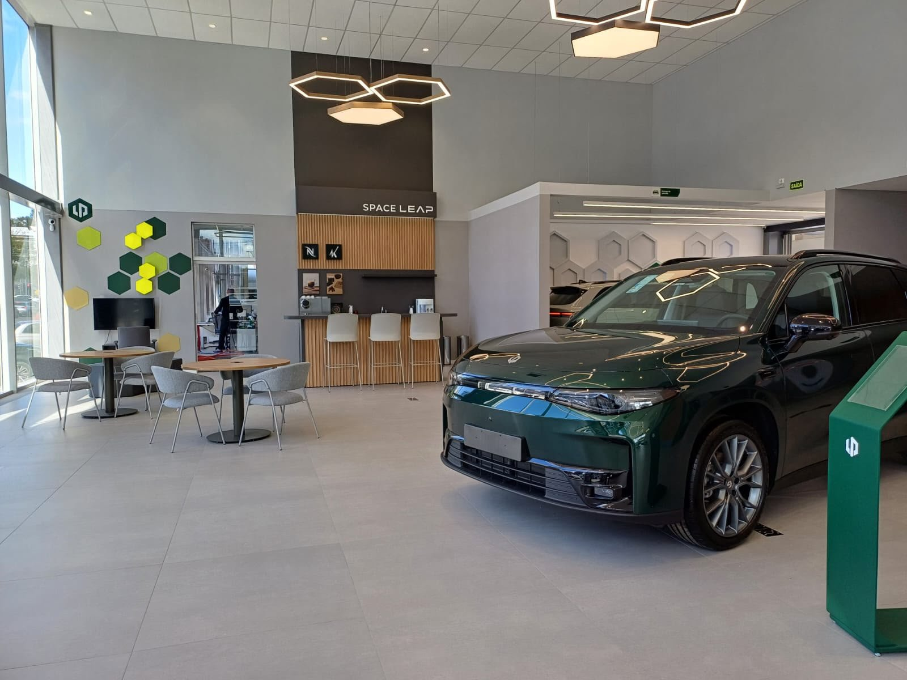

Vendas de veículos leves crescem 14,5% em setembro, mas mercado dá sinais de acomodação
Foram 265,3 mil emplacamentos (Renavam/Bright); eletrificados ficam com 22,9% e chinesas com 21,4%, ambos abaixo de agosto.

Os emplacamentos de automóveis e comerciais leves somaram 265,3 mil unidades em setembro, alta de 14,5% sobre o mesmo mês de 2025 e de 1,6% sobre agosto, segundo dados do Renavam divulgados pela Bright Consulting e publicados pela AutoData.
Como setembro teve um dia útil a menos que um ano antes, a média diária saltou de 10,5 mil para 12,6 mil unidades, avanço de 20%. No acumulado do ano, as vendas chegam perto de 2,15 milhões, 18,7% acima de 2025 — crescimento que, segundo a consultoria, não se explica por efeito calendário.
A Bright atribui o resultado à recuperação da confiança do consumidor, ao avanço dos eletrificados, à consolidação das marcas chinesas e à migração de compradores de seminovos para o zero-quilômetro. Ainda assim, vê um momento de estabilização: a alta anual foi menor que os 22% registrados em agosto.
A venda direta respondeu por 48,5% do total. Os eletrificados representaram 22,9% do mercado, com 60,8 mil unidades, e as marcas chinesas 21,4%, com 56,8 mil — nos dois casos, participação menor que a de agosto.